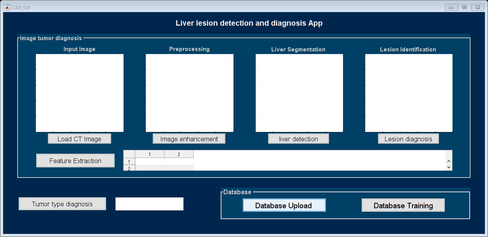

function varargout = CAD_GUI(varargin)
gui_Singleton = 1;
gui_State = struct('gui_Name', mfilename, ...
'gui_Singleton', gui_Singleton, ...
'gui_OpeningFcn', @CAD_GUI_OpeningFcn, ...
'gui_OutputFcn', @CAD_GUI_OutputFcn, ...
'gui_LayoutFcn', [] , ...
'gui_Callback', []);
if nargin && ischar(varargin{1})
gui_State.gui_Callback = str2func(varargin{1});
end
if nargout
[varargout{1:nargout}] = gui_mainfcn(gui_State, varargin{:});
else
gui_mainfcn(gui_State, varargin{:});
end
function CAD_GUI_OpeningFcn(hObject, eventdata, handles, varargin)
handles.output = hObject;
guidata(hObject, handles);
function varargout = CAD_GUI_OutputFcn(hObject, eventdata, handles)
varargout{1} = handles.output;
function edit1_Callback(hObject, eventdata, handles)
function edit1_CreateFcn(hObject, eventdata, handles)
if ispc && isequal(get(hObject,'BackgroundColor'), get(0,'defaultUicontrolBackgroundColor'))
set(hObject,'BackgroundColor','white');
end
function pushbutton1_Callback(hObject, eventdata, handles)
[FileName,PathName] = uigetfile('*.jpg;*.png;*.bmp','Pick an CT Image');
if isequal(FileName,0)||isequal(PathName,0)
warndlg('User Press Cancel');
else
I = imread([PathName,FileName]);
I = imresize(I,[256,256]);
[row col dim]=size(I);
if dim > 1
I=rgb2gray(I);
end
axes(handles.axes1)
imshow(I);
handles.ImgData = I;
guidata(hObject,handles);
end
function pushbutton2_Callback(hObject, eventdata, handles)
if isfield(handles,'ImgData')
I = handles.ImgData;
Pre=imadjust(I,[.4 .7],[0 1]);
axes(handles.axes2)
imshow(Pre);
handles.ImgPre = Pre;
guidata(hObject,handles);
end
function pushbutton3_Callback(hObject, eventdata, handles)
I = handles.ImgData;
F=imadjust(I,[.8 .9],[0 1]);
Pre = handles.ImgPre;
z=im2bw(F);
I2=I;
I1=imresize(I,[600 600]);
mask = false(size(I1));
mask(1,1) = true;
W = graydiffweight(I1, mask, 'GrayDifferenceCutoff', 25);
thresh = 0.01;
[BW, D] = imsegfmm(W, mask, thresh);
dd=D(:,:,1)>0.1;
st=strel('disk',18);
d1=imerode(dd,st);
mul=immultiply(d1,I1(:,:,1));
Img1 = imresize(mul,[256 256]);
Img=double(Img1(:,:,1));
G=fspecial('gaussian',5);
Img_smooth=conv2(Img,G,'same');
[Ix,Iy]=gradient(Img_smooth);
f=Ix.^2+Iy.^2;
g=1./(1+f);
equldis=2; weight=6;
width = 256;
height = 256;
radius = 10;
centerW = width/3.3;
centerH = height/2.3;
[W,H] = meshgrid(1:width,1:height);
mask = ((W-centerW).^2 + (H-centerH).^2) < radius^2;
if mean2(I2)>50
mask=imread('mask1.jpg');
else
mask=imread('mask.jpg');
end
BW = double(im2bw(mask));
[nrow, ncol]=size(Img1);
c0=4;
initialLSF= -c0*2*(0.5-BW);
u=initialLSF;
u=initialLSF;
evolution=230;
for n=1:evolution
u=levelset(u, g ,equldis, weight);
if mod(n,20)==0
pause(1);
axes(handles.axes3)
imshow(I, [0, 255]);colormap(gray);hold on;
[c,h] = contour(u,[0 0],'r');
w = h.LineWidth;
h.LineWidth = 2;
hold off;
end
end
u=imfill(u,'holes');
u1=double(imclearborder(im2bw(u)));
g2 = imdilate(u1, strel('disk',3));
BW2 = bwmorph(g2, 'open');
BW2 = uint8(BW2);
img_out = I.*BW2;
axes(handles.axes3)
imshow(img_out);
handles.ImgLiver = img_out;
BW_groundTruth= imread('Images\Malignant\i_57b.jpg');
BW_groundTruth = logical(BW_groundTruth);
BW_Created = logical(BW2);
similarityDICE = dice(BW_Created, BW_groundTruth)
similarityJAC = jaccard(BW_Created, BW_groundTruth)
corr= corr2(BW_Created, BW_groundTruth)
guidata(hObject,handles);
function pushbutton4_Callback(hObject, eventdata, handles)
liver_img = handles.ImgLiver;
[~,U,~,H]=FastFCMeans(liver_img,3);
Umap=FM2map(liver_img,U,H);
BW1 = uint8(Umap(:,:,2));
BW2 = bwmorph(BW1, 'close');
BW3 = imopen(BW2,strel('disk',3));
Area = bwarea(BW3);
BW3=uint8(BW3);
lesion_img = liver_img.*BW3;
axes(handles.axes4)
imshow(lesion_img);
handles.ImgLesion = lesion_img;
guidata(hObject,handles);
function pushbutton5_Callback(hObject, eventdata, handles)
lesion_img = handles.ImgLesion;
whos lesion_img
Area = bwarea(lesion_img)
GLCM = graycomatrix(lesion_img,'Offset',[0 1;-1 1;-1 0;-1 -1]);
stats = grayprops(GLCM, 0);
Contrast = stats.contr(1)
Correlation = stats.corrp(1);
Energy = stats.energ(1);
Homogeneity = stats.homom1(1);
Mean = mean(lesion_img(:))
Standard_Deviation = std2(lesion_img);
Kurtosis = kurtosis(double(lesion_img(:)));
Skewness = skewness(double(lesion_img(:)));
feat = [Contrast,Correlation,Energy,Homogeneity, Area, Mean, Skewness, Standard_Deviation, Kurtosis]
set(handles.uitable1,'Data',feat);
set(handles.uitable1, 'ColumnName', {'Contrast', 'Correlation','Energy','Homogeneity',...
'Area','Mean','Skewness','Standard_Deviation','Kurtosis'});
set(handles.uitable1, 'RowName', {'Value'});
handles.Feature = feat;
guidata(hObject,handles);
function pushbutton6_Callback(hObject, eventdata, handles)
testFeature = handles.Feature
load TrainFeatures
load Truetype
X = TrainImgFeatures;
Y = Livercate';
svmStruct1 = fitcsvm(X,Y,'kernel_function', 'rbf');
species = predict(svmStruct1,testFeature)
predictedType = species{1};
if strcmp(predictedType, Truetype{1})
Imgcate = 'Benign Tumor';
helpdlg('The identified tumor type is Benign.');
elseif strcmp(predictedType, Truetype{2})
Imgcate = 'Malignant Tumor';
helpdlg('The identified tumor type is Malignant.');
else
Imgcate = 'Unknown Type';
helpdlg('The tumor type could not be classified.');
end
set(handles.edit1, 'String', Imgcate);
guidata(hObject, handles);
function pushbutton7_Callback(hObject, eventdata, handles)
Path = handles.Path;
[TrainImgFeatures, Livercate] = CollectionFeature(Path);
save TrainFeatures 'TrainImgFeatures' 'Livercate'
guidata(hObject,handles);
function pushbutton8_Callback(hObject, eventdata, handles)
folder_name = uigetdir;
if isequal(folder_name,0)
warndlg('User Press Cancel');
else
handles.Path = folder_name;
end
guidata(hObject,handles);
